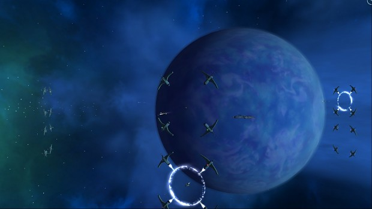
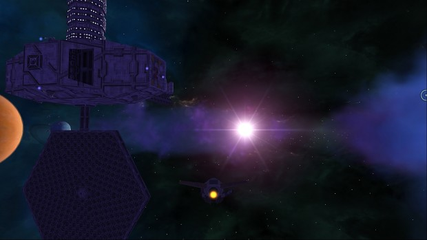
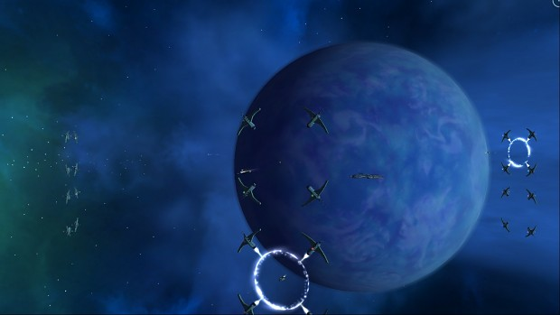
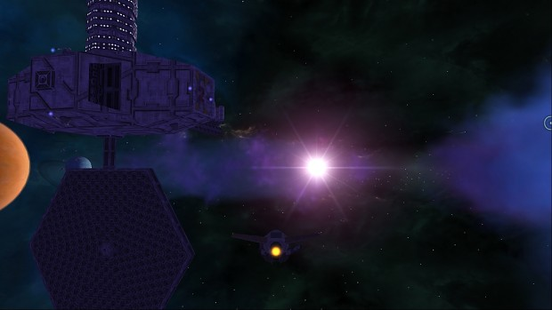
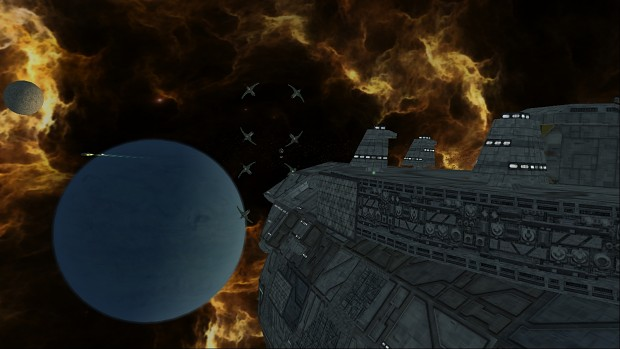
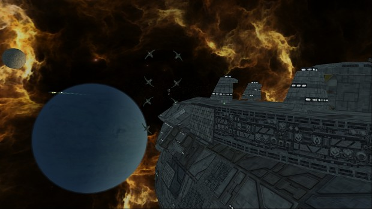
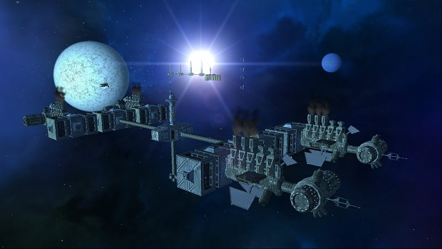
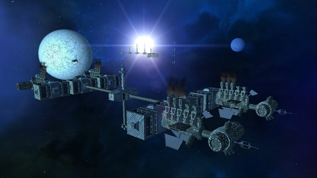

When I first started making models for Afertmath, I barely started using Blender. I was lucky to have a great team of modellers, which taught me alot. Fox, Alex, Lucas and the rest of the people who contributed with ideas and rough models such as UnluckySoul, Kuze, Motoko and others were the ones that set the foundation for several of the ship lines. I just expanded on their ideas and tried my best to make the best ships model/ ship lines that I could.
These models are for you, the Freelancer community. It is my hope that you will be of some sort of use to the community. Use them in your mod, use them as a starting point to build your own, use them to learn to model. Use them for whatever you feel like they might be of use. But I do have one small thing to ask, when using them, please credit Aftermath. While the project might be gone, these ships here will be here to remind people that a small team of players tried to make a great Freelancer mod. Freeport-7 signing off.
Aftermath is a mod for the 2003 game Freelancer that draws inspiration from Freelancer’s vanilla gameplay and themes as well as its long lineage of mods. Development so far has focused on a series of innovative features that focus on overhauling and improving Freelancer’s core gameplay systems, including unique takes on trading, smuggling, mining, exploration and a completely new approach to player progression.
This will all be tied together with a modern UI replacement for Freelancer’s dated interface and heavy integration with our website, allowing management of multiple ships, assets and player groups from a web interface outside the game.
We aim to deliver all of this with a high level of polish along with regular content updates after release. Aftermath is intended to be played in a multiplayer roleplay environment and there are no development plans for singleplayer at this time.
Aftermath is set in 815 AS, 15 years after the events of Freelancer and follows through with the assumption that the Nomad threat was successfully covered up. While relations between the houses normalized somewhat in the immediate aftermath of the war, there is now a great deal of suspicion and mistrust between the houses, who are also struggling to contain dissident factions, crime and their own internal political struggles.
 




 

 
